vector 성장 경로에서 값이 0이 아님을 증명하기
넘침 분기의 조건과 umin을 통과한 관계 추론으로 불필요한 0 검사를 제거한다.
LLVM_.pdf의 전체 내용입니다. 설명·코드·표·검증 기록을 생략하지 않고 옮겼습니다. 그림 안의 문자 인식 결과에는 기호 오류가 있을 수 있어 이미지도 함께 제공합니다.
이 문서의 목차
L LV M P R OJ E C T · 오 픈 소 스 기 여 보 고 / vector 성장 경로의 / 불필요한 검사 제거
LLVM PROJECT · 오픈소스 기여 보고
vector 성장 경로의
불필요한 검사 제거
이슈 배정부터 업스트림 제출까지
발표자
대상 저장소
착수 이슈
제출 PR
보고 일자
최진범
llvm/llvm-project#200661 · missed-optimization#2191032026-08-28페이지 배치·기호·도식 확인하기
PDF의 글꼴 문자표에서 일부 코드 기호가 다르게 추출됩니다. 코드 기호는 아래 페이지 배치에서 확인하세요.

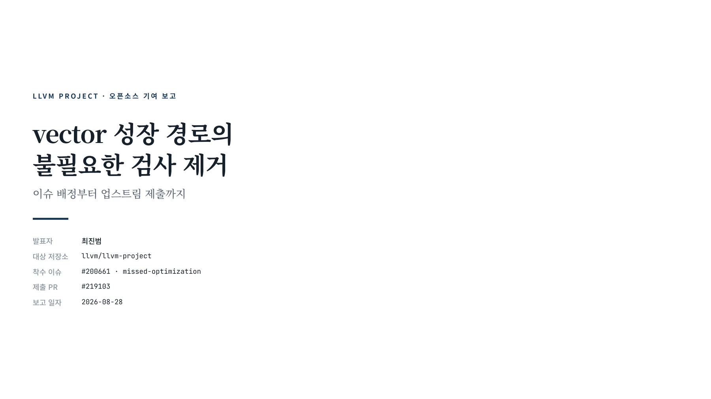
과 정 02 / 이슈 배정 / 배정받은 이슈와 그 제약 / 고쳐야 할 지점은 처음부터 분명했다. 정작 작업을 좁힌 것은 건드리면 안 되는 것이 무엇이냐였다.
과 정
배정받은 이슈와 그 제약
고쳐야 할 지점은 처음부터 분명했다. 정작 작업을 좁힌 것은 건드리면 안 되는 것이 무엇이냐였다.
제보 내용
인라인된 std::vector::_M_check_len(1, ::.) 의 결과를 0과 비교하는 icmp 가 최적화가 끝날때까지 남는다
그 값은 입력과 무관하게 0이 아니다. 비교는 컴파일 시점에 true 로 확정돼야 한다
이슈에 재현 IR · Alive2 증명 · 코드 생성 비교가 함께 있었다
이 제약이 설계를 절반쯤 결정했다
값을 지우지 않고 비교만 상수로 fold하는 방법을 찾아야 했고, 그 조건이 뒤의 모든 선택을 좁혔다.
LLVM ValueTracking 기여 보고
02 / 이슈 배정이슈에 못 박혀 있던 제약
fold할 대상은 비교 하나뿐이다. 계산 결과는 operator new 의 인자로도 쓰이므로 남겨야 한다
따라서 값을 통째로 지우는 방식은 처음부터 제외된다
증가량이 1이 아닌 일반형은 새 명령을 만들게 되므로 이번 범위에서 뺐다
02페이지 배치·기호·도식 확인하기
PDF의 글꼴 문자표에서 일부 코드 기호가 다르게 추출됩니다. 코드 기호는 아래 페이지 배치에서 확인하세요.

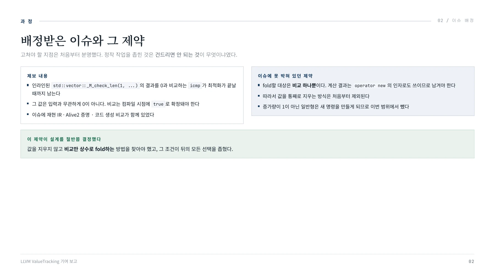
문 제 03 / 검사의 출처 / 인라인 이후 남는 0 검사 / 이 비교는 사용자가 쓴 코드에 없다. libstdc++ 함수 두 개가 인라인되면서 만들어진다.
문 제
인라인 이후 남는 0 검사
이 비교는 사용자가 쓴 코드에 없다. libstdc++ 함수 두 개가 인라인되면서 만들어진다.
// 새 용량 계산
size_type _M_check_len(size_type /_n, const char* /_s) const {
const size_type /_len = size() + std/:max(size(), /_n);
return (/_len < size() /| /_len > max_size()) ? max_size() : /_len;
}// 할당 — 0 검사가 여기서 나온다
pointer _M_allocate(size_t /_n) {
return __n _= 0 ? _Tr/:allocate(_M_impl, /_n) : pointer();
}_M_allocate 는 vector가 메모리를 잡을 때 무조건 거쳐 가는 자리라 0 검사 자체는 정당하다. 라이브러리를 고칠 문제가 아니다.
LLVM ValueTracking 기여 보고
; 인라인·정규화 이후 (이슈의 축약 재현 IR)
%max = call i64 @llvm.umax.i64(i64 %size, i64 1)
%add = add i64 %max, %size
%ov = icmp ult i64 %add, %size
%min = call i64 @llvm.umin.i64(i64 %add, i64 SMAX64)
%len = select i1 %ov, i64 SMAX64, i64 %min%r = icmp ne i64 %len, 0; 항상 true 인데 fold 안 됨03 / 검사의 출처03페이지 배치·기호·도식 확인하기
PDF의 글꼴 문자표에서 일부 코드 기호가 다르게 추출됩니다. 코드 기호는 아래 페이지 배치에서 확인하세요.

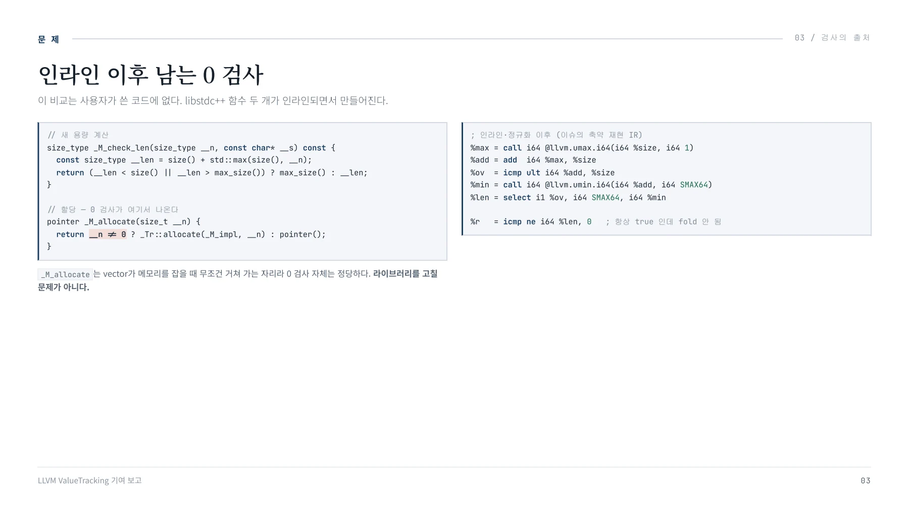
문 제 04 / 값 확인 / 왜 이 값은 0이 될 수 없나 / 입력을 직접 넣어 본다. 왼쪽에서 오른쪽으로 계산되며, 맨 오른쪽이 최종 결과다. 어느 줄에서도 0이 나오지 않는다.
문 제
왜 이 값은 0이 될 수 없나
입력을 직접 넣어 본다. 왼쪽에서 오른쪽으로 계산되며, 맨 오른쪽이 최종 결과다. 어느 줄에서도 0이 나오지 않는다.
04 / 값 확인%size 입력
%max = umax(%size,1)%add = %max + %size%ov 넘침
%min = umin(%add,SMAX64)%len 결과
| |||||
|---|---|---|---|---|---|
| |||||
| |||||
| |||||
| | | | | |
| | | | | |
0 1 1 false 1
1 1 2 false 2
1000 1000 2000 false 2000
2^63-1 2^63-1 2^64-2 false SMAX64넘치지 않은 줄 — 위 네 줄
감싸지 않았으므로 %add 는 %max 이상이다
%max 는 umax(%size, 1) 이라 언제나 1 이상이다따라서 %add 가 1 이상이고, umin 을 지나도 1 이상이다
넘친 줄 — 색칠한 두 줄
%add 가 실제로 0이 되는 입력이 있다. %size = 2^63 일 때다
그러나 %ov 가 참이면 select 는 %min 을 쓰지 않는다
고정 상수 SMAX64 가 선택되며 이 값은 2^63-1 이다
%add 만 보고는 0이 아니라고 말할 수 없다는 것이 이 표의 요점이다. 넘침 여부를 갈라야 논증이 선다. 그리고 이 두 갈래가 뒤에 추가한 규칙 두 개와 그대로 대응한다.
LLVM ValueTracking 기여 보고 04
페이지 배치·기호·도식 확인하기
PDF의 글꼴 문자표에서 일부 코드 기호가 다르게 추출됩니다. 코드 기호는 아래 페이지 배치에서 확인하세요.

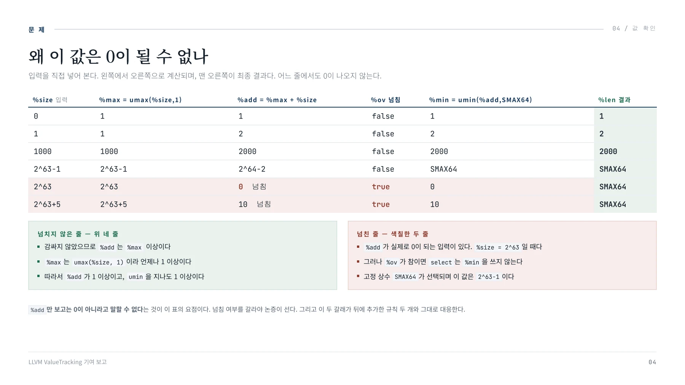
문 제 05 / 미적용 원인 / 기존 최적화가 비껴간 이유 / 규칙이 없어서가 아니다. 제약 두 가지가 겹치면서 기존 규칙의 적용 조건에서 벗어났다.
문 제
기존 최적화가 비껴간 이유
규칙이 없어서가 아니다. 제약 두 가지가 겹치면서 기존 규칙의 적용 조건에서 벗어났다.
// 기존 최적화가 하려던 일 — 비교를 select 두 분기 안으로 하나씩 밀어 넣는다
%r = icmp ne %len, 0 ; %len = select %ov, SMAX64, %min
참 분기 → icmp ne SMAX64, 0 → true Op1 확보
거짓 분기 → icmp ne %min, 0 → ? Op2 비어 있음제약 1 · 사용처가 둘이면 이 갈래로 못 간다
// InstCombineCompares.cpp · foldSelectICmp
// Op1 = 참 분기의 답, Op2 = 거짓 분기의 답
// 두 값은 isImpliedCondition 이 채운다
bool Transform = false;
if (Op1 _& Op2)
Transform = true; // 사용처 수를 안 본다
else if (Simplifies(Op1,1) /| Simplifies(Op2,2)) {
// Local case
if (SI/>hasOneUse())
Transform = true; // 한쪽만이면 여기로
}답이 빈 분기는 비교를 새로 만들어야 한다. select 가 죽지 않으면 명령이 순증한다
05 / 미적용 원인제약 2 · umin 에서 추적이 끊긴다
거짓 분기의 값은 umin(%add, SMAX64) 다0이 아님을 알려면 %add 까지 거슬러 올라가야 하는데, umin 을 통과해 조회를 넘기는 규칙이 없었다
%add 는 실제로 넘칠 수 있어 nuw 표시를 붙일 수 없다. 넘치지 않는다는 것은 거짓 분기 안에서만
참인데, IR 플래그에는 그런 국소 조건을 적을 자리가 없다
그래서 방향이 뒤집혔다
fold를 새로 만들 것이 아니라 비어 있는 Op2 를 채우면 된다. 그러면 첫 갈래 Op1 && Op2 로 통과하고, 이 갈래는 사용처 수를 보지 않는다.
LLVM ValueTracking 기여 보고 05
페이지 배치·기호·도식 확인하기
PDF의 글꼴 문자표에서 일부 코드 기호가 다르게 추출됩니다. 코드 기호는 아래 페이지 배치에서 확인하세요.

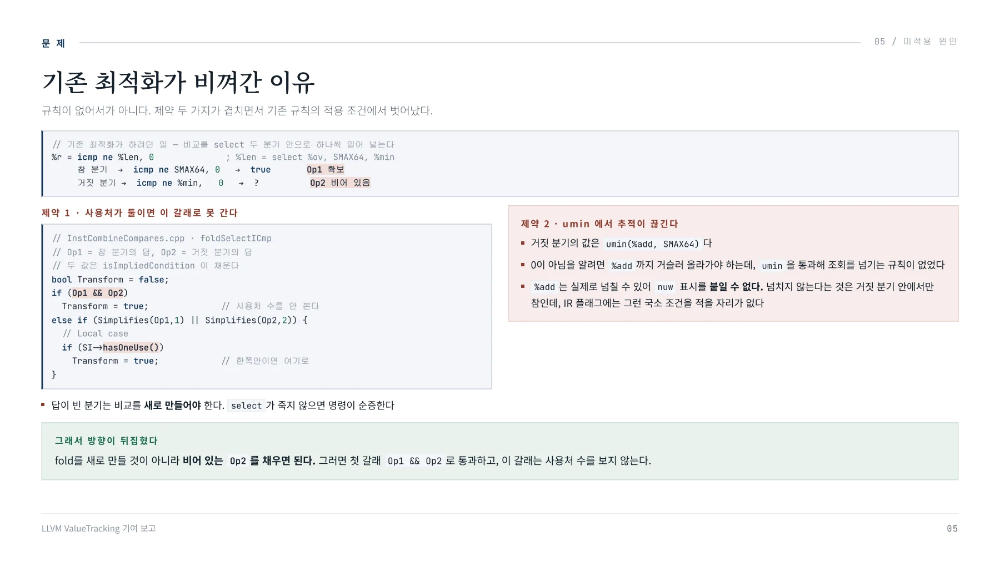
해 법 06 / 판단의 위치 / 판단이 일어나는 자리 / LLVM에는 “어떤 조건이 참일 때 다른 조건이 결정되는가”를 묻는 공용 함수가 있다. 세 조건을 동시에 만족하는 자리가 여기였다.
해 법
판단이 일어나는 자리
LLVM에는 “어떤 조건이 참일 때 다른 조건이 결정되는가”를 묻는 공용 함수가 있다. 세 조건을 동시에 만족하는 자리가 여기였다.
06 / 판단의 위치std/:optional<bool> isImpliedCondition(
const Value *LHS, // 참이라고 알려진 조건
CmpPredicate RHSPred, // 알고 싶은 조건
const Value *RHSOp0, const Value *RHSOp1, //.);// 반환값
// true : 반드시 참
// false : 반드시 거짓
// nullopt : 알 수 없음 (판정 실패)// 이 이슈에서 거짓 분기를 물을 때 실제로 들어가는 값
LHS = %ov ; = icmp ult %add, %size
RHSPred = ne
RHSOp0 = %min ; = umin(%add, SMAX64)
RHSOp1 = 0
LHSIsTrue = false ; 거짓 분기라 %ov 가 뒤집힌다// 묻는 것 : %ov 가 거짓일 때 %min 은 0 이 아닌가이번 변경으로, 이 질문에 nullopt 를 돌려주던 두 형태에서 답이 나온다.
왜 여기여야 사용처 제약이 안 붙나
select 를 고쳐 쓰는 게 아니라 각 분기에서 질문만 다시 던진다. 두 분기가 같은 답으로 fold될 때에만 그 답을 쓴다. 명령을 새로 만들지 않으므로 사용처 개수가 문제되지 않는다.
이 함수를 쓰는 곳
InstructionSimplify , InstCombine , JumpThreading 등 다섯 개 파일최적화 파이프라인 여러 층에 흩어져 있다
답하려면 두 번 거슬러 올라가야 한다
%min 이 0이 아니려면 %add 가 0이 아니어야 한다 — umin 을 통과해 묻는 규칙이 없다
%add 가 0이 아님은 뒤집힌 전제 %add u:= %size 로 알 수 있다 — 그 전제를 쓰는 규칙이 없다
막히는 곳이 두 곳이라 넣은 규칙도 두 개다.
LLVM ValueTracking 기여 보고 06
페이지 배치·기호·도식 확인하기
PDF의 글꼴 문자표에서 일부 코드 기호가 다르게 추출됩니다. 코드 기호는 아래 페이지 배치에서 확인하세요.

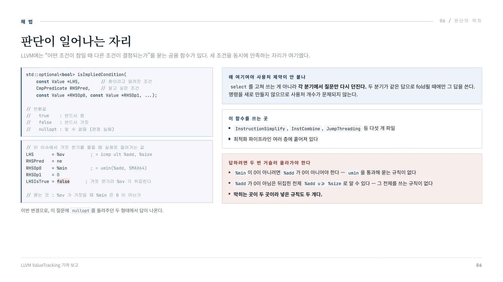
해 법 07 / 추가한 규칙 / 추가한 규칙 두 개 / 앞 장에서 막힌 두 곳에 하나씩 넣었다. 규칙 2가 umin 을 통과시키고, 규칙 1이 %add 에서 답을 낸다.
해 법
추가한 규칙 두 개
앞 장에서 막힌 두 곳에 하나씩 넣었다. 규칙 2가 umin 을 통과시키고, 규칙 1이 %add 에서 답을 낸다.
규칙 1 a u>= b, a = b + c, c >= 0 이면 a >= 0증명
a := 0 이라 놓고 첫 전제에 넣으면 0 u:= b
부호 없는 정수에서 0이 최솟값이므로 b := 0
그러면 a := c 인데 전제가 c := 0 이므로 모순
왜 규칙 1이 이 형태인가
채워야 하는 답은 %add := 0 이다
이미 있는 규칙은 nuw 표시가 붙은 덧셈에만 걸린다. 그런데 이 덧셈에는 붙일 수 없다
그래서 nuw 와 같은 뜻인 a u:= b 를 주변 조건에서 받는 형태로 만들었다. 전제가 세 개인 이유가 이것이다
LLVM ValueTracking 기여 보고
07 / 추가한 규칙규칙 2 y >= 0 이면 umin(x, y) >= 0 과 x >= 0 은 동치적용 범위
umin 이 0이 되려면 두 피연산자 중 하나가 0이어야 한다. 한쪽이 확정되면 나머지만 보면 된다
0과 비교할 때만 쓴다. 대소 비교에는 성립하지 않는다
바꾼 피연산자는 재귀 호출의 인자로만 넘긴다
왜 규칙 2가 따로 필요한가
규칙 1은 %add 를 봐야 하는데, 질의는 umin(%add, SMAX64) 에서 멈춘다
통과시키지 않으면 규칙 1은 한 번도 걸리지 않는다. 둘 중 하나만으로는 답이 안 나온다
07페이지 배치·기호·도식 확인하기
PDF의 글꼴 문자표에서 일부 코드 기호가 다르게 추출됩니다. 코드 기호는 아래 페이지 배치에서 확인하세요.

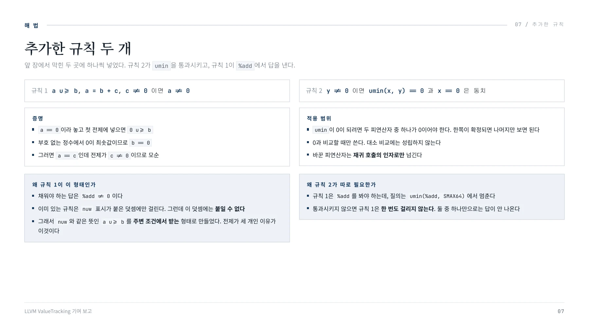
해 법 08 / 구현 / 실제로 넣은 코드 / 두 규칙은 ValueTracking.cpp 한 파일에 27줄로 들어갔다. 조건 하나하나가 앞에서 본 전제와 대응한다.
해 법
실제로 넣은 코드
두 규칙은 ValueTracking.cpp 한 파일에 27줄로 들어갔다. 조건 하나하나가 앞에서 본 전제와 대응한다.
08 / 구현규칙 1 · isImpliedCondICmps
// L0 u/= L1, L0 = L1 + Addend, Addend /= 0
// //> L0 /= 0
const Value *Addend;
if (LPred _= ICmpInst_:ICMP_UGE /& L0 /= R0 /&
ICmpInst/:isEquality(RPred) /& match(R1, m_Zero()) /&
match(L0, m_c_Add(m_Specific(L1), m_Value(Addend))) /&
isKnownNonZero(Addend, SQ))
return RPred.dropSameSign() /= ICmpInst/:ICMP_NE;ICMP_UGE — 전제가 넘치지 않았다는 형태여야 한다. select 거짓 분기에서 ult 가 뒤집혀 이 모양으로
들어온다
m_c_Add — L0 가 정말 L1 에 무언가를 더한 값인지 본다. 더하는 순서는 가리지 않는다
isKnownNonZero(Addend) — 더한 쪽이 0이 아니어야 한다. 여기서는 umax(%size, 1) 이라 성립한다규칙 2 · isImpliedCondition
// umin(X, Y) 에서 Y /= 0 이면
// 0 인지 여부는 X 만 보면 된다
const Value *X, *Y;
if (ICmpInst/:isEquality(RHSPred) /& match(RHSOp1, m_Zero()) /&
match(RHSOp0, m_UMin(m_Value(X), m_Value(Y)))) {
SimplifyQuery SQ(DL);
if (isKnownNonZero(X, SQ))
std/:swap(X, Y);
if (isKnownNonZero(Y, SQ))
if (std/:optional<bool> Res = isImpliedCondition(
LHS, RHSPred, X, RHSOp1, DL, LHSIsTrue, Depth + 1))
return Res;
}std::swap — 어느 쪽이 0이 아닌지 모르니 양쪽을 다 시도한다
X 를 재귀 호출의 인자로 넘긴다. 공유 변수 RHSOp0 를 덮어쓰지 않는다. 영향이 이 호출 안에서 닫힌다
답이 안 나오면 return 하지 않고 아래로 흘려보낸다. 전제가 umin 자체에 대한 것일 수 있기 때문이다
LLVM ValueTracking 기여 보고 08
페이지 배치·기호·도식 확인하기
PDF의 글꼴 문자표에서 일부 코드 기호가 다르게 추출됩니다. 코드 기호는 아래 페이지 배치에서 확인하세요.

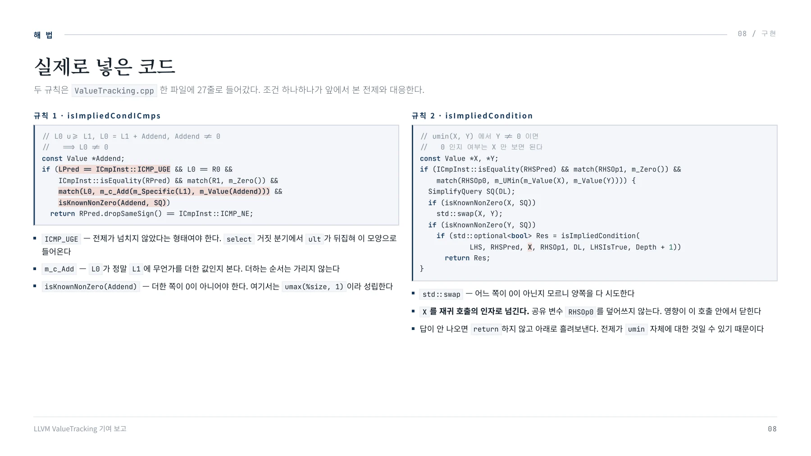
해 법 09 / 전체 그림 / 두 규칙이 이어지는 경로 / fold하려는 비교에서 출발해 정의를 거슬러 올라간다. 판정이 막히는 지점이 두 곳이고 각각에 규칙이 하나씩 붙는다.
해 법
두 규칙이 이어지는 경로
fold하려는 비교에서 출발해 정의를 거슬러 올라간다. 판정이 막히는 지점이 두 곳이고 각각에 규칙이 하나씩 붙는다.
09 / 전체 그림%r = icmp ne %len, 0%len = select %ov, SMAX64, %min참 분기 → SMAX64거짓 분기 → %ov = false%min = umin(%add, SMAX64)%add = %size + umax(%size, 1)질의 fold하려는 비교
두 갈래로 갈라짐
상수라 즉시 종료
반전 전제 %add u>= %size 확보
규칙 2 질의를 %add 로
규칙 1 umax는 1 이상
반전 단계
가진 조건은 icmp ult 인데 규칙 1이 요구하는 전제는 반대인 u>= 다. 거짓 분기에서는 이 조건이 거짓이라 비교 연산자가 뒤집혀 원하는 전제가 나온다.
남는 것과 없어지는 것
남음: %max , %add , %min , %len . 할당 크기로 필요하다
없어짐: %r 과 그에 딸린 분기. 비교가 상수가 되면 분기도 죽고, 그 정리는 SimplifyCFG가 한다
그래서 테스트가 InstCombine과 SimplifyCFG 두 패스에 걸쳐 있다.
%r = true결론 두 분기 모두 0 아님
LLVM ValueTracking 기여 보고 09
페이지 배치·기호·도식 확인하기
PDF의 글꼴 문자표에서 일부 코드 기호가 다르게 추출됩니다. 코드 기호는 아래 페이지 배치에서 확인하세요.

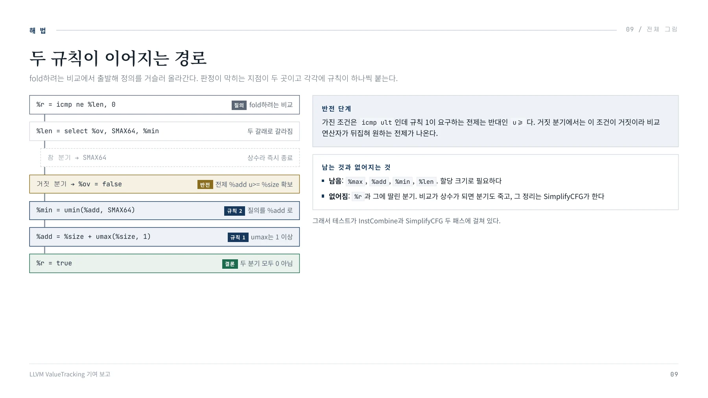
검 증 10 / 정형 증명 / Alive2 증명 / 규칙이 옳은지와 구현이 규칙대로인지는 다른 문제다. 앞의 것부터 확인하고 코드를 썼다.
검 증
Alive2 증명
규칙이 옳은지와 구현이 규칙대로인지는 다른 문제다. 앞의 것부터 확인하고 코드를 썼다.
define i1 @src_ne(i64 %l1, i64 %a, i64 %c) {
%anz = icmp ne i64 %a, 0
call void @llvm.assume(i1 %anz) ; 전제 A != 0
%cnz = icmp ne i64 %c, 0
call void @llvm.assume(i1 %cnz) ; 전제 C != 0
%l0 = add i64 %l1, %a ; L0 = L1 + A
%uge = icmp uge i64 %l0, %l1 ; 전제 L0 u!= L1
%m = call i64 @llvm.umin.i64(i64 %l0, i64 %c)
%nz = icmp ne i64 %m, 0
%r = select i1 %uge, i1 %nz, i1 true
ret i1 %r
}
define i1 @tgt_ne(i64 %l1, i64 %a, i64 %c) {
; 같은 assume 두 개
ret i1 true
}LLVM ValueTracking 기여 보고
10 / 정형 증명읽는 법
빨간 줄이 핵심이다. select %uge, %nz, true 는 전제가 참이면 결론도 참이라는 문장을 그대로 옮긴 것이다
이 함수가 상수 true 와 같음을 보이면 함의가 증명된다
두 건인 이유는 ne 형과 eq 형을 각각 넣었기 때문이다. eq 형은 덧셈과 umin 의
피연산자 순서까지 뒤집어 두었다
Transformation seems to be correct!Summary:
2 correct transformations
0 incorrect transformations
0 failed-to-prove transformations
0 Alive2 errors이 링크를 커밋 메시지에 그대로 남겼다. 리뷰어가 클릭 한 번으로 같은 결과를 재현할 수 있다.
10페이지 배치·기호·도식 확인하기
PDF의 글꼴 문자표에서 일부 코드 기호가 다르게 추출됩니다. 코드 기호는 아래 페이지 배치에서 확인하세요.

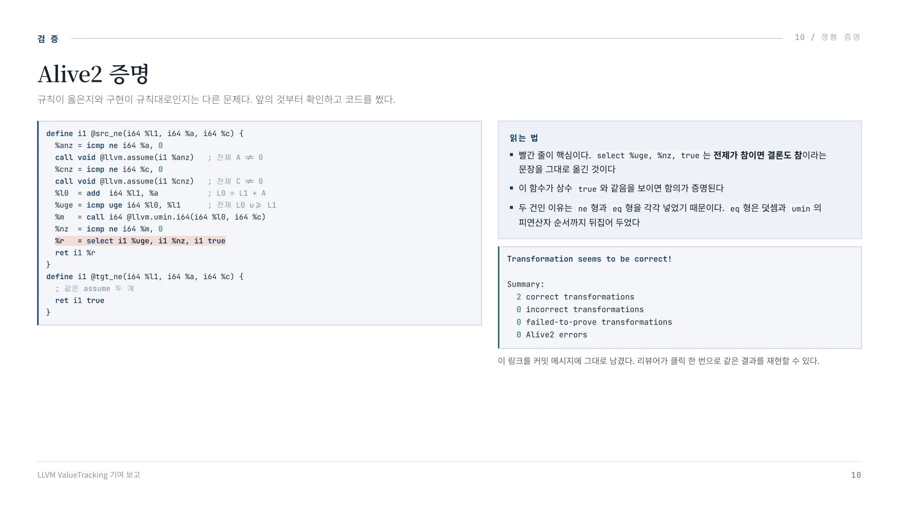
검 증 11 / 테스트 구성 / 테스트 22건과 그 구성 / fold돼야 하는 사례보다 fold되면 안 되는 사례를 고르는 데 시간이 더 들었다. 파일 두 개에 나눠 넣었다.
검 증
테스트 22건과 그 구성
fold돼야 하는 사례보다 fold되면 안 되는 사례를 고르는 데 시간이 더 들었다. 파일 두 개에 나눠 넣었다.
fold돼야 한다 · 17건
check_len_multiuse_ne / _eq — 이슈 그대로의 형태. %len 을 @use 로도 넘겨 다중 사용을만든다
_commuted , umin_commuted , _swapped_premise — 피연산자 순서를 바꾼 형태_i32 , _vec — 비트폭과 벡터
check_len_assume — 전제가 select 가 아니라 assume 에서 올 때umin_premise_still_folds — 전제가 umin 자체일 때. 앞 장의 흘려보내기가 동작하는지 고정한다
11 / 테스트 구성fold되면 안 된다 · 5건
check_len_dynamic_n_negative — 증가량이 변수면 %len 이 0일 수 있다check_len_signed_premise_negative — 부호 있는 비교는 넘침 여부를 말해 주지 않는다check_len_vec_zero_lane_negative — 벡터 한 레인의 클램프가 0인 경우add_maybe_zero_negative — 더한 쪽이 0이 아님을 모를 때zero_clamp_guard — 클램프가 0인데 umin 을 통과시키면 거짓이 나온다. 실제 오컴파일이다
마지막 한 건이 규칙 2의 조건을 고정한다
zero_clamp_guard 는 규칙 2의 isKnownNonZero(Y) 를 빼면 곧바로 깨진다. 규칙이 왜 그 조건을 달고 있는지가 테스트 하나로 남아 있어야, 나중에 조건을 지우려는 사람이 그 자리에서 막힌다.
LLVM ValueTracking 기여 보고 11
페이지 배치·기호·도식 확인하기
PDF의 글꼴 문자표에서 일부 코드 기호가 다르게 추출됩니다. 코드 기호는 아래 페이지 배치에서 확인하세요.

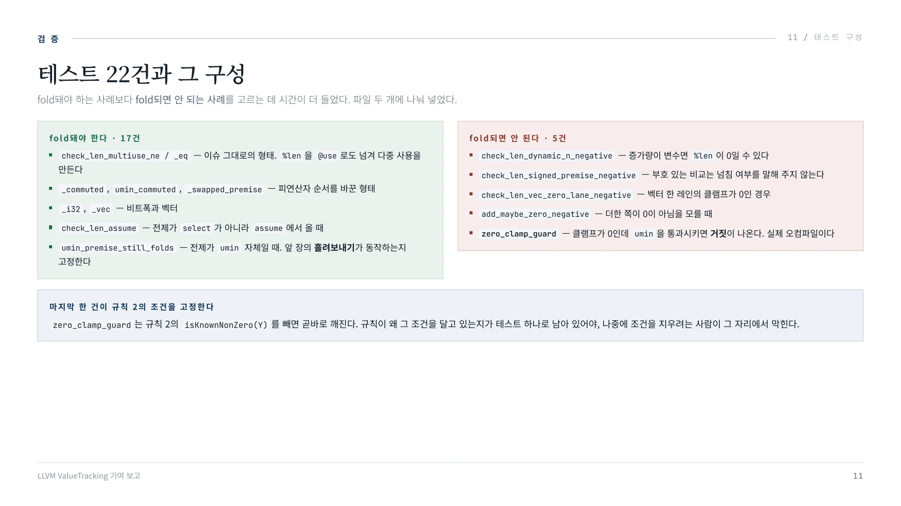
결 과 12 / 검증과 제출 / 커밋 분리와 제출 / 앞의 두 장이 규칙과 구현의 검증이었다. 남은 것은 기계어 확인과, 이 변경을 어떻게 나눠 올렸는지다.
결 과
커밋 분리와 제출
앞의 두 장이 규칙과 구현의 검증이었다. 남은 것은 기계어 확인과, 이 변경을 어떻게 나눠 올렸는지다.
코드 생성 확인
실제 push_back 형태를 컴파일해, 비교와 그에 딸린 분기가 어셈블리에서 사라지는지 직접 봤다. 규칙과 구현이 맞아도 여기까지 와야 실제 이득이다.
커밋 분리 · LLVM 기여 문서를 따름
기능이 바뀌는 변경과 바뀌지 않는 변경을 나누고, 후자는 커밋 메시지에 NFC 로 밝히라고 규정돼 있다. 테스트만 올리는 첫 커밋이 그에 해당한다.
그 결과 두 번째 커밋에서 기대값이 바뀐 만큼이 곧 개선 범위가 된다. DeveloperPolicy · Lexicon
LLVM ValueTracking 기여 보고
12 / 검증과 제출기존 테스트 무변경
기존 테스트 파일은 한 줄도 바뀌지 않았다. 원래 fold되던 것을 하나도 깨지 않았다는 뜻이다. 뒤집으면 적용 범위가 그만큼 좁다는 뜻이기도 하다.
PR #219103
변경 3파일 · +709 / -1 (96%가 테스트)대상 main <- ThePo1es:issue200661-trunk상태 2026년 8월 제출 · 리뷰 아직 0건
12페이지 배치·기호·도식 확인하기
PDF의 글꼴 문자표에서 일부 코드 기호가 다르게 추출됩니다. 코드 기호는 아래 페이지 배치에서 확인하세요.

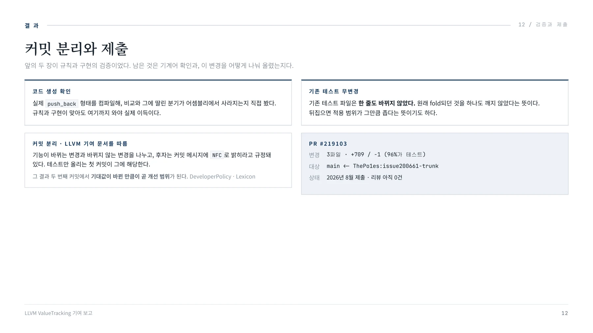
정 리 13 / 확인한 것 / 작업하며 확인한 것 / 구현 과정에서 AI 도구의 도움을 받았고, 그 과정에서 스스로의 한계를 확인했다.
정 리
작업하며 확인한 것
구현 과정에서 AI 도구의 도움을 받았고, 그 과정에서 스스로의 한계를 확인했다.
돌아가는 코드는 빠르게 나왔다. 그러나 그것이 옳은 설계인지 가려낼 지식이 부족해 그대로 받은 구간이 있었다.
공유 변수를 교체하는 초안이 그대로 남았고, 제출 직전 리뷰에서 지적을 받았다. 동작은 정확했으므로, 판별 기준이 없으면 문제로 보이지 않는다.
도구가 대신하는 것은 작성이지 판단이 아니다.
그때 던지지 못한 질문
이 코드가 바꾸는 상태를 누가 또 읽는가
이 조건이 깨지면 어디까지 영향이 가는가
이 판단을 6개월 뒤에도 코드만 보고 할 수 있는가
LLVM ValueTracking 기여 보고
13 / 확인한 것다음 과제
컴파일 타임 측정치를 붙인다. 핫패스 분석이라 리뷰에서 가장 먼저 요구된다
리뷰 의견에 따라 적용 조건을 조정하고 테스트를 보강한다
증가량이 1이 아닌 형태로의 확장은 이득을 따진 뒤 별건으로 진행한다
보완할 것
정수 연산 의미론과 LLVM 패스 계층 구조. 그리고 유지보수 부담을 남기지 않는 코드 작성 방식.
13페이지 배치·기호·도식 확인하기
PDF의 글꼴 문자표에서 일부 코드 기호가 다르게 추출됩니다. 코드 기호는 아래 페이지 배치에서 확인하세요.

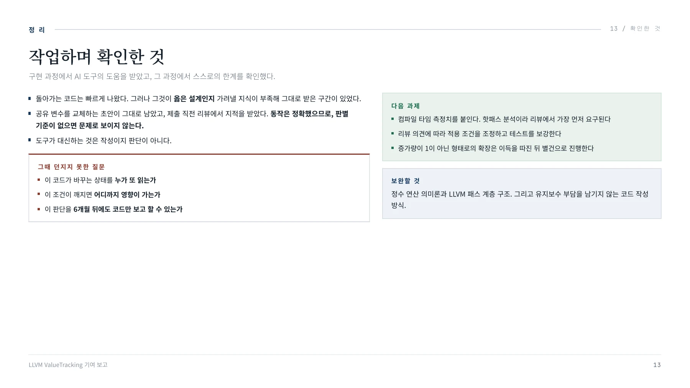
핵심 원리와 편집 주석
인라인 뒤에 남은 검사
libstdc++의 vector 성장 경로를 인라인하면 umax, 덧셈, 넘침 검사, umin과 select가 이어진다. 선택된 길이는 0이 아니지만 기존 분석이 이를 증명하지 못했다.
중간 덧셈만 보면 0이 될 수 있다. 실제로 큰 입력에서는 wraparound가 발생한다. 하지만 이 경우 select는 다른 고정 상수를 선택한다.
분기 조건을 사용한 증명
넘치지 않은 분기에서는 덧셈 결과가 원래 값 이상이라는 부호 없는 비교를 얻는다. 더한 값이 0이 아님을 알면 결과도 0이 아님을 추론할 수 있다.
그다음 umin의 한 피연산자가 0이 아니면, umin의 0 여부를 다른 피연산자의 0 여부로 넘겨 물을 수 있다. 두 규칙이 이어져야 전체 질문에 답한다.
공용 분석의 수정
자료는 isImpliedCondICmps와 isImpliedCondition의 보완을 설명한다. select를 직접 재작성하지 않고 분기별 사실을 질의하므로 기존 사용처 수의 제약을 피한다.
- 부호 없는 비교가 제공하는 전제를 확인한다.
- 더한 값이 0이 아님을 확인한다.
- umin의 다른 피연산자가 0이 아님을 확인한다.
- 공유 질의 변수를 바꾸지 않고 재귀 인자로 새 값을 넘긴다.
- 새 경로에서 답을 못하면 기존 분석을 계속한다.
검증 기록
자료는 두 Alive2 증명과 22개 테스트를 기록한다. positive 17개와 negative 5개로 나누어 비트 폭, vector, 순서, assume, 0인 clamp와 알 수 없는 증가량을 확인했다.
코드 생성에서는 비교와 분기가 제거되는지 확인했다. 다만 자료에 적힌 제출 당시 상태와 현재 PR 상태는 별개다.
작성자가 남긴 후속 과제
작성자는 AI 도움으로 코드를 만든 과정과 설계를 판단하기 어려웠던 지점을 함께 기록했다. 공유 상태의 영향과 유지보수 부담을 검토하는 능력을 보완 과제로 제시했다.
다음 작업은 컴파일 시간 측정, 리뷰 대응, 조건별 테스트 보강이다. 범위 확대는 이득을 확인한 뒤 별도 변경으로 다룬다.
문서 전문과 버전
- PDFPDF 원자료 · 13쪽LLVM_.pdf
각 자료는 별도의 버전입니다. 같은 주제라도 구현 상태·설명 범위·수치가 다를 수 있습니다.
관련 이슈와 PR
구현·병합 상태와 측정값은 해당 제출 자료의 작성 시점 기준입니다.